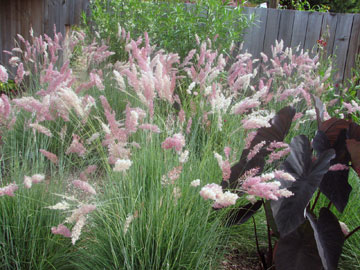

Gardening Matters
Welcome, fellow gardeners. My name is Cosie Simmons, the owner of Blooms & Bulbs. My passion has always been my gardens. Ever since I was
a small child, I was drawn to my back yard where all varieties of beautiful
plants flourished. A lush carpet of thick grass bordered with graceful beds
is truly a haven for all living creatures. With proper planning and care, your
gardens will draw a variety of birds and butterflies and become a great pleasure
to you.
Gardening Issues
There are several areas to concentrate on when formulating your landscaping
plans. One is your grass. Another is the number and variety of trees you plant.
The third is the combination of plants you select. All of these decisions should
be considered in relation to the climate in your area. Be sure and check out
our gardening tips before you begin work.
Grass
Lawn experts classify grass into two categories: cool-climate and warm-climate.
The northern half of the United States would be considered cool-climate. Examples
of cool-climate grass are Kentucky bluegrass and ryegrass. Bermuda grass is
a warm-climate grass. Before planting grass, whether by seeding, sodding, sprigging,
or plugging, the ground must be properly prepared. The soil should be tested
for any nutritional deficiencies and cultivated. Come by or call to make arrangements
to have your soil tested. When selecting a lawn, avoid letting personal preferences and the cost of establishment be the overriding factors. Ask yourself these questions: What type of lawn are you expecting? What level of maintenance are you willing to provide? What are the site limitations?

Trees
Before you plant trees, you should evaluate your purpose. Are you interested
in shade, privacy, or color? Do you want to attract wildlife? Attract
birds?
Create a shady play area? Your purpose will determine what variety of tree
you should plant. Of course, you also need to consider your climate
and available
space. Shape is especially important in selecting trees for ornamental and shade purposes. Abundant shade comes from tall trees with long spreading or weeping branches. Ornamental trees will not provide abundant shade. We carry many varieties of trees and are happy to help you make your
selections to fit your purpose.
Plants

There are so many types of plants available that it can become overwhelming.
Do you want border plants, shrubs, ground covers, annuals, perennials, vegetables,
fruits, vines, or bulbs? In reality, a combination of several of these works
well. Design aspects such as balance, flow, definition of space and focalization should be considered. Annuals provide brilliant bursts of color in the garden. By selecting flowers carefully to fit the conditions of the site, it is possible to have a beautiful display without an unnecessary amount of work. Annuals are also great as fresh and dry cut flowers. Perennials can greatly improve the quality of your landscape. Perennials have come and gone in popularity, but today are as popular as ever. Water plants are also quite popular now. We will be happy to help you sort
out your preferences and select a harmonious combination of plants for you.
Further Research
These are some of my favorite gardening links. Take the time to browse through
some of the information they offer
- National Gardening Association
- Organic Gardening
- Southern Living